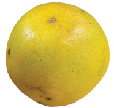

Swali la saba. Umbo la pembenne sita limegawanywa katika sehemu nne; sehemu moja ya juu kulia imepakwa rangi ya chungwa hafifu. dashi.
Swali la nane. Miviringo miwili iliyosimama inagusana; mviringo wa kushoto umepakwa rangi ya kijani kibichi na wa kulia haujapakwa rangi. dashi.
Swali la tisa. Mstatili umegawanywa katika sehemu mbili sawa; sehemu ya kulia imepakwa rangi ya kijani. dashi.
Tutambue theluthi moja na theluthi mbili za kitu kizima
Vipande vitatu vya kitu kimoja vinavyolingana huunda kitu kizima kimoja. Theluthi ni kipande kimoja kati ya vipande vitatu vya kitu kimoja vinavyolingana.
Kwa mfano, unaweza kukata chungwa katika vipande vitatu vinavyolingana. Kila kipande ni theluthi moja. Ukiondoa kipande kimoja kati ya hivyo vipande vitatu vinavyolingana, sehemu inayobaki ni theluthi mbili.
Kwa kutumia tarakimu, theluthi moja huandikwa moja juu ya tatu
Husomwa theluthi moja au moja juu ya tatu. Kwa kutumia tarakimu, theluthi mbili huandikwa mbili juu ya tatu na husomwa theluthi mbili au mbili juu ya tatu. Picha ifuatayo inaonesha chungwa lililogawanywa katika vipande vitatu vinavyolingana.

Chungwa